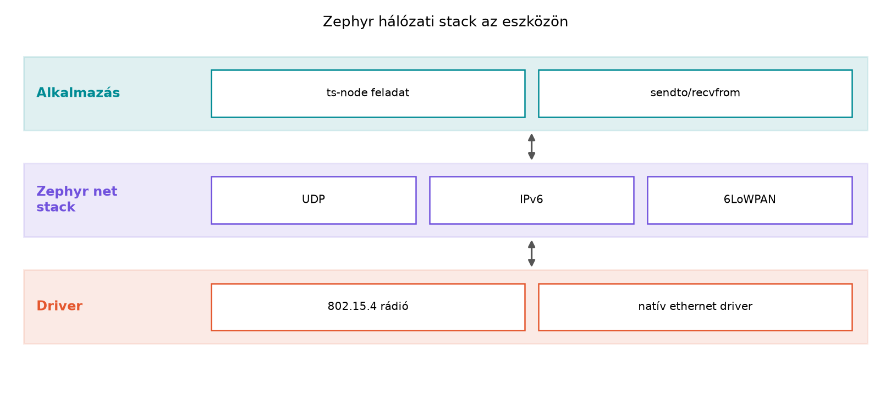

A TerraSense ts-node eddig emulált szenzorait a saját
processzén belül olvasta, de ahhoz, hogy az adat eljusson a gatewayhez
vagy a felhőbe, az eszköznek hálózati kapcsolatra van szüksége. Amikor a
rádió közvetlenül IP-alapú, a fejlesztő megszokott socket-absztrakciót
használhat; amikor nem, protokollfordító gateway kell. Ez az alfejezet
azt mutatja meg, hogyan kaphat egy korlátos mikrovezérlő IPv6-címet
6LoWPAN-on vagy Threaden, és hogyan nyithatunk Zephyrben BSD-szerű
UDP-socketet, amely native_sim-en a Linux hosttal
kommunikál.
Definíció. Az IPv6 a 128 bites
címzésű hálózati protokoll (RFC 8200). Minden interfész rendelkezik
link-local fe80::/10 címmel; a globális címet általában
router advertisement (RA) hirdeti meg, vagy statikusan adjuk meg.
Definíció. A 6LoWPAN (IPv6 over Low-Power Wireless Personal Area Networks, RFC 6282) IPv6-csomagok szállítását teszi lehetővé IEEE 802.15.4 rádió felett fejléc-tömörítéssel és szükség esetén fragmentálással, mert a 802.15.4 fizikai keret hasznos része sokszor mindössze 81–127 bájt nagyságrendű, szemben az IPv6 40 bájtos alapfejlécével.
Definíció. A Thread egy IPv6-alapú, alacsony fogyasztású mesh topológiájú hálózati protokoll, amely a 6LoWPAN-t használja a 802.15.4 fölött, és a csomópontok közötti útvonalakat automatikusan építi fel. A border router az a csomópont, amely a Thread mesh-t összeköti a nagyobb IP-hálózattal, például a helyi Ethernet/Wi-Fi hálózattal.
A 6LoWPAN fejléc-tömörítés lényege, hogy a link-local prefixeket, az ismert interfész-azonosítókat és a nullázható mezőket nem kell minden csomagban elküldeni. Például ha a forrás- és célcím is link-local, a forgalmi osztály és a flow label nulla, akkor a 40 bájtos IPv6 fejléc akár 2 bájtra csökkenthető. A UDP 8 bájtos fejléce is tömöríthető: a portszámokból csak a változó részt kell átvinni, a checksum pedig elhagyható, ha a rádiós réteg garantálja az integritást. Az alábbi rétegábra a Zephyr hálózati vermet mutatja, amelyben a socket API az alkalmazás felől ugyanaz, míg alatta a rádióhoz igazodó adaptációs réteg dolgozik.

Az alkalmazás tehát socket() hívással dolgozik; a Zephyr
hálózati stack a CONFIG_NET_* Kconfig kapcsolókkal
kapcsolható be, a driver pedig eldönti, hogy a keret ténylegesen
802.15.4, Thread vagy emulált Ethernet közegen megy-e ki. A Zephyr
socket API BSD-szerű: a socket, bind,
connect, sendto, recvfrom,
close függvények neve és alapszemantikája megegyezik a
Linux socketekkel, de a háttérben nincs külön címtér, a hálózati verem
fut a mikrovezérlő processzén, és a pufferek, a csatlakozások száma,
valamint a szálak veremigénye fordítási időben, Kconfiggal
korlátozott.
A fő kérdés: érdemes-e IP-t juttatni az eszközre, vagy inkább a gateway fordítson? A táblázat a TerraSense-hez is használható szempontokat foglalja össze.
| Szempont | IPv6/6LoWPAN/Thread az eszközön | Nem-IP rádió (BLE, LoRaWAN) + gateway |
|---|---|---|
| Végpont-végpont biztonság (TLS/DTLS) | működik | csak gateway-feloldással |
| Energiaigény | nagyobb, folyamatosabb rádióaktivitás | kisebb lehet (pl. LoRaWAN) |
| Flash/RAM igény | magasabb (IP stack) | alacsonyabb |
| Hálózati topológia | mesh, öngyógyuló (Thread) | jellemzően csillag |
| Szabványos alkalmazásprotokoll (MQTT, CoAP) | közvetlenül fut az eszközön | gateway kell |
| Címzési modell | minden eszköznek saját IP-címe van | gateway mögötti azonosító |
A Thread akkor előnyös, ha több tucatnyi, elemes eszköznek kell kis
energiafogyasztású meshben, IPv6-végpontként működnie, és van egy border
router a telephelyen. A TerraSense üvegházához például Thread mesh
illik, ha a csomópontok egymás között is át tudják adni a csomagokat; ha
viszont csak néhány BLE-szenzor van, a BLE + ts-gw
egyszerűbb lehet. A Zephyr socket API akkor is ugyanúgy használható, ha
a rádió IP-t beszél; a nem-IP rádiók esetében a protokollfordítás a
gateway feladata.
ts-node
UDP-üzenet a hostraMunkakönyvtár:
mkdir -p ~/iot-labor/i025/src
cd ~/iot-labor/i025A labor a Zephyr native_sim boardot használja, és a
ts-node processz egy IPv6-os UDP-socketről küld
hello from ts-node üzenetet a Linux hostra. Az előző Devicetree és Kconfig: a hardver és a konfiguráció
leírása alfejezet prj.conf-ját bővítjük hálózati
beállításokkal.
A CMakeLists.txt:
cmake_minimum_required(VERSION 3.20)
find_package(Zephyr REQUIRED HINTS $ENV{ZEPHYR_BASE})
project(ts_node_udp)
target_sources(app PRIVATE src/main.c)A prj.conf:
CONFIG_NETWORKING=y
CONFIG_NET_IPV6=y
CONFIG_NET_UDP=y
CONFIG_NET_LOG=y
CONFIG_NET_IPV6_PEER_ADDR="2001:db8::1"
CONFIG_ETH_NATIVE_POSIX=y
CONFIG_NET_L2_ETHERNET=yA CONFIG_ETH_NATIVE_POSIX a natív Ethernet driver
kiválasztása; a CONFIG_NET_IPV6_PEER_ADDR a host
IPv6-címére mutat. A pontos Kconfig-nevek az aktuális Zephyr-verzióban
ellenőrizendők, mert a hálózati driver és a peer-cím beállítási módja
változhat.
A src/main.c:
#include <zephyr/kernel.h>
#include <zephyr/net/socket.h>
#include <stdio.h>
#include <string.h>
#define PEER_IP "2001:db8::1"
#define PEER_PORT 4242
int main(void)
{
int sock;
struct sockaddr_in6 addr;
const char *msg = "hello from ts-node";
sock = socket(AF_INET6, SOCK_DGRAM, IPPROTO_UDP);
if (sock < 0) {
printf("socket failed: %d\n", sock);
return 0;
}
memset(&addr, 0, sizeof(addr));
addr.sin6_family = AF_INET6;
addr.sin6_port = htons(PEER_PORT);
if (inet_pton(AF_INET6, PEER_IP, &addr.sin6_addr) != 1) {
printf("inet_pton failed\n");
close(sock);
return 0;
}
printf("ts-node UDP sender started, peer [%s]:%d\n", PEER_IP, PEER_PORT);
while (1) {
ssize_t sent = sendto(sock, msg, strlen(msg), 0,
(struct sockaddr *)&addr, sizeof(addr));
if (sent < 0) {
printf("sendto failed: %d\n", sent);
} else {
printf("sent %zd bytes\n", sent);
}
k_msleep(5000);
}
}A strlen miatt a string.h-t is be kell
húzni, a printf a Zephyr konzoljára ír.
Build és futtatás:
west build -b native_sim -d build
sudo ./build/zephyr/zephyr.exeA sudo azért szükséges, mert a natív Ethernet driver a
hoston TAP-interfészt hoz létre. A hoston egy másik terminálban
konfiguráljuk a TAP IP-címét, és indítunk egy UDP-listener-t:
sudo ip -6 addr add 2001:db8::1/64 dev zeth
nc -6 -u -l 4242A zeth interfésznév és a TAP létrehozási módja az
aktuális Zephyr native_sim hálózati driver
dokumentációjában ellenőrizendő. Várt kimenet a hoston:
hello from ts-nodeA Zephyr konzol logjában pedig öt másodpercenként:
sent 18 bytesAz időzítés native_sim-en nem valós hardverhű; ez a
labor a socket API és a hálózati útvonal működését demonstrálja, nem
pedig tényleges rádiós időzítést.
A működés legegyszerűbb ellenőrzése a netcat kimenete;
ha a host megkapta az üzenetet, akkor a Zephyr socket, a hálózati stack
és a natív driver is működött. Ha a csomag nem érkezik meg, az alábbi
táblázat segít.
| Tünet | Ok | Javítás |
|---|---|---|
Nincs zeth interfész |
A futtatás nem root, vagy a natív Ethernet driver nem engedélyezett | sudo-val futtatni;
CONFIG_ETH_NATIVE_POSIX=y beállítás |
sendto hiba, -22 (EINVAL) |
A célcím nem érvényes IPv6, vagy a család nem AF_INET6 | inet_pton visszatérési értékét ellenőrizni |
| A host nem kap csomagot, de a log szerint elküldte | A host oldali IP-cím nincs a zeth interfészre rendelve,
vagy tűzfal szűri az UDP-portot |
IP-cím felvétel, tűzfal engedélyezése |
| A build nem találja a hálózati szimbólumokat | A prj.conf hálózati kapcsolói hiányoznak |
CONFIG_NETWORKING=y,
CONFIG_NET_IPV6=y |
fe80:: címre küld, a Linux socketeknél meg kell
adni a kimenő interfész azonosítóját (fe80::1%zeth). A
példában globális 2001:db8::1 címet használunk, ezért nincs
szükség zone indexre, de link-local kommunikációban ez gyakori hiba
forrása.sendto sikere csak azt jelenti, hogy a csomag átadódott a
hálózati stacknek; a csomag elveszhet, duplikálódhat vagy átrendeződhet.
A TerraSense telemetriánál a monoton seq és a későbbi
MQTT-kézbesítési garanciák oldják meg az at-least-once szemantikát.socket() hívás általában működik, ha a
CONFIG_NETWORKING engedélyezett, de bonyolultabb
beállításoknál (statikus IP, csatlakozás előtti várakozás, több
interfész) explicit interfész- és IP-konfiguráció kell.ts-node-nak, és a
ts-node recvfrom-mal fogadja, majd kiírja a
választ. A hoston nc -6 -u -l 4242 helyett például
socat válaszoljon. A kódváltozást a
src/main.c-ben tegye meg, és rögzítse az új függvényt.ts-node logban sendto failed: -22 jelenik meg.
Milyen három lehetséges okot ellenőrizne először, és milyen sorrendben?
Indokolja a sorrendet.recvfrom hozzáadása:char buf[64];
struct sockaddr_in6 src;
socklen_t src_len = sizeof(src);
ssize_t recv = recvfrom(sock, buf, sizeof(buf) - 1, 0,
(struct sockaddr *)&src, &src_len);
if (recv >= 0) {
buf[recv] = '\0';
printf("got reply: %s\n", buf);
}A fogadást érdemes külön szálba vagy a küldő ciklus elé tenni, mert a
recvfrom blokkol. A host oldalon például
socat UDP6-LISTEN:4242,fork EXEC:'echo received'
használható. 4. Először a sendto paramétereit ellenőrizném:
sock érvényes-e, az addr családja
AF_INET6-e, és az inet_pton sikeres volt-e.
Másodszor a Zephyr konfigurációt: engedélyezve van-e a
CONFIG_NET_IPV6 és az UDP. Harmadszor a cél IP-cím
érvényességét a host zeth interfészén: ha a
2001:db8::1 nincs hozzárendelve, a stack
ENETUNREACH hibát is adhat. A -22
(EINVAL) leggyakrabban a család vagy a cím formátumával
kapcsolatos.
Az alfejezet bemutatta, hogyan jut IP-kapcsolat egy korlátos eszközre
IPv6, 6LoWPAN és Thread segítségével. A 6LoWPAN
fejléc-tömörítéssel csökkenti az IPv6/UDP fejlécek költségét a 802.15.4
rádiókon, a Thread pedig IPv6 mesh-hálózatot épít,
amelyet border router köt össze a nagyobb hálózattal. A Zephyr BSD-szerű
socket API-ja lehetővé teszi, hogy a ts-node
sendto/recvfrom hívásokkal kommunikáljon,
miközben a rádió- és adaptációs rétegeket a hálózati stack elrejti. A
labor a ~/iot-labor/i025/ könyvtárban egy
native_sim UDP-küldőt hozott létre, amely a host
2001:db8::1 címére küld hello from ts-node
üzenetet. Továbbvitt eredmény. A
src/main.c socket-inicializáló és üzenetküldő logikája,
valamint a prj.conf hálózati beállításai alapját képezik a
MQTT a gyakorlatban: Zephyr-kliens és Mosquitto
és a CoAP: REST UDP fölött, Observe és
blokkátvitel alfejezeteknek; az MQTT/CoAP laborok ugyanezt a
socket-réteget fogják használni a TCP/UDP kapcsolatokhoz.
native_sim board.CONFIG_ETH_NATIVE_POSIX és a peer-cím
Kconfig-szimbólum pontos neve, a zeth interfész létrehozása
és a native_sim hálózati driver aktuális viselkedése a
telepített Zephyr-verzióban.socat és nc IPv6
UDP-módjának pontos kapcsolói az Ubuntu 24.04 rendszeren.